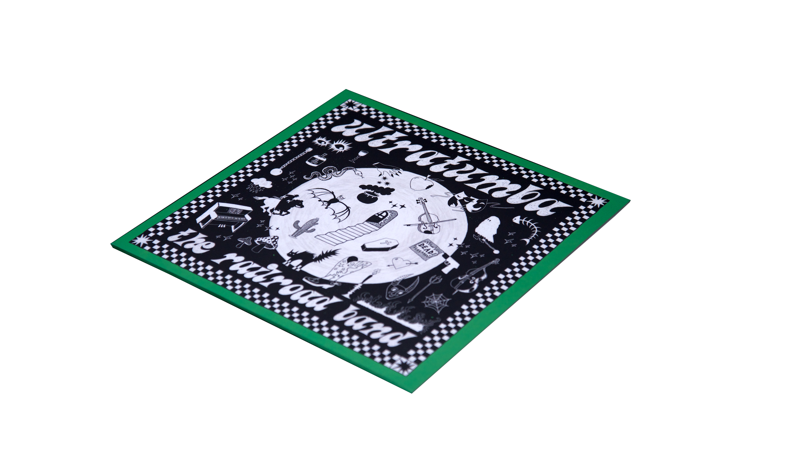
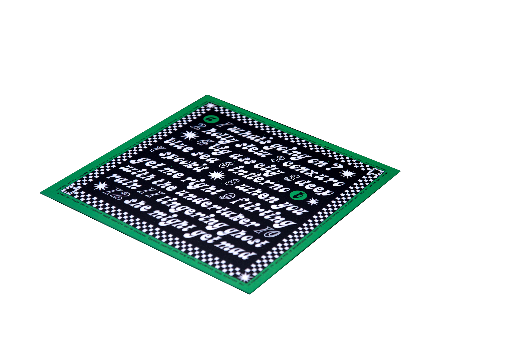
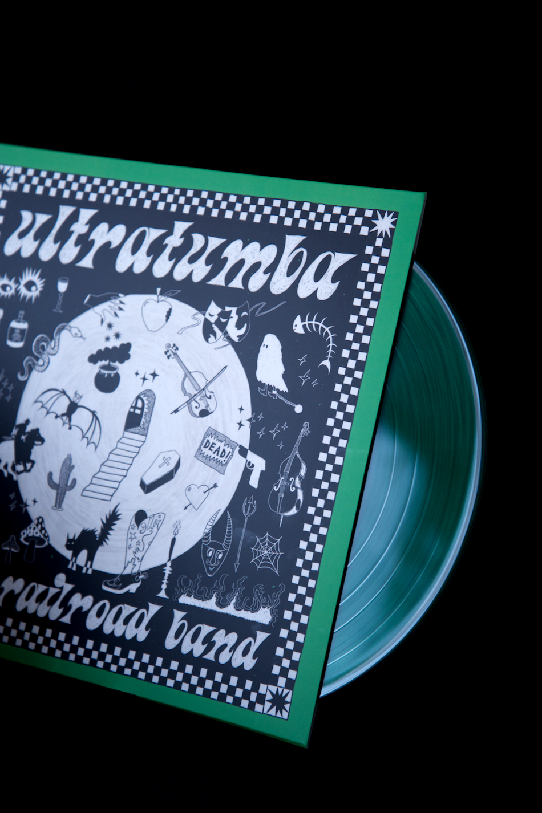
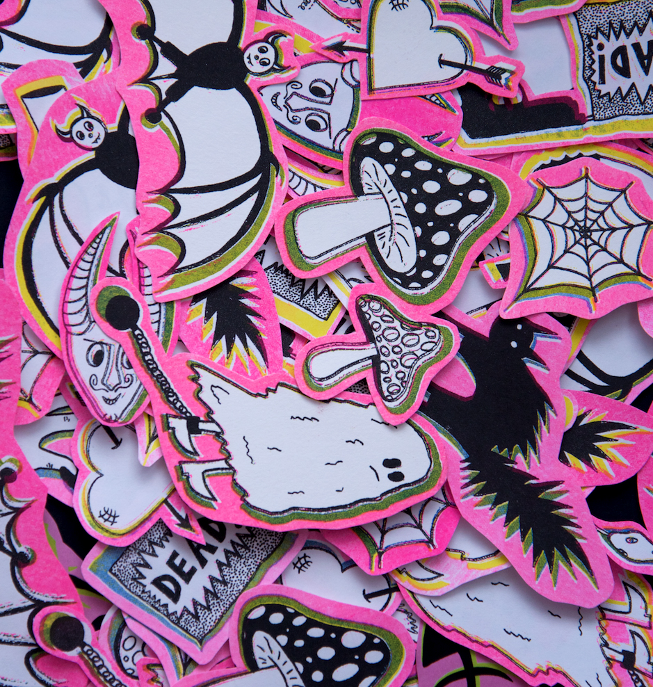
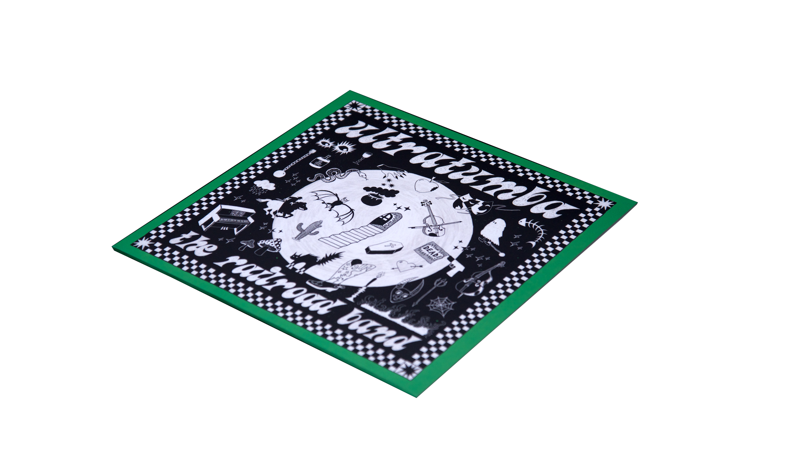
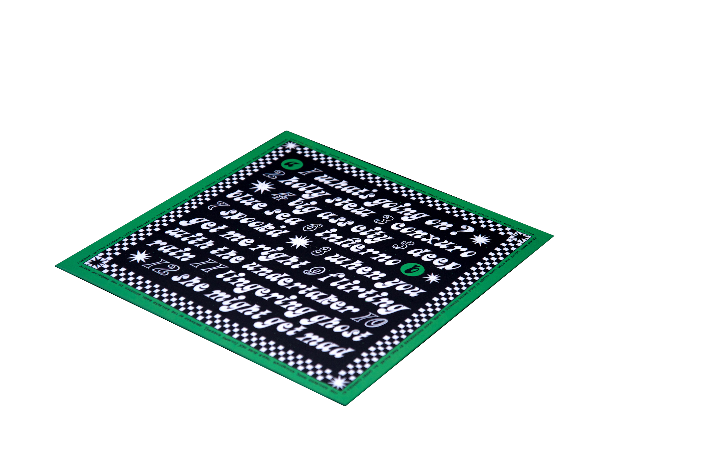
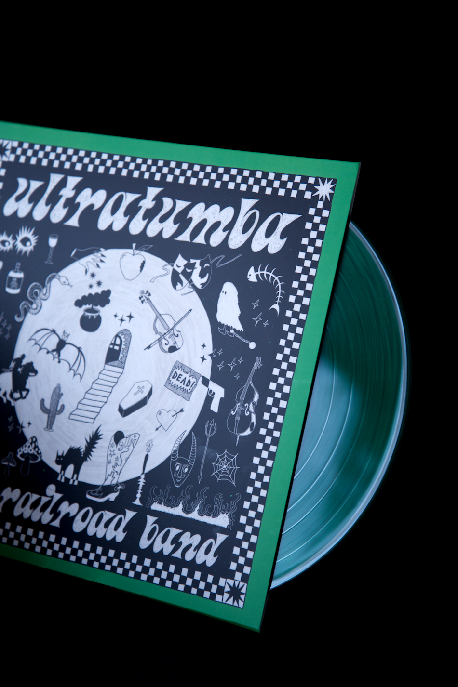
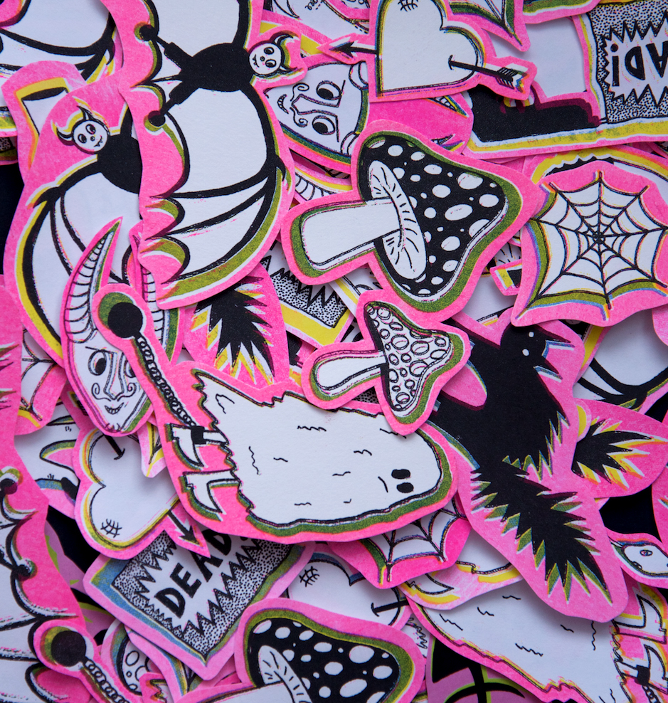

Ultratumba
I was tasked with creating a vinyl record cover and band merchandise for Galician band, The Railroad Band. The merch was part of a crowdfunding campaign, so had to have a lot of visual appeal in order to encourage people to donate. The resulting products were a fully-designed, vinyl record pressed in green with full illustrated cover, a green and lilac screenprinted tote bag, and a series of handmade, risoprinted and digitally-printed stickers. The sounds of The Railroad Band encompass influences from Country, Blues, Latin, Roma and Galician music. This record has a dark, fun and lo-fi sound, which I aimed to capture through the visuals. The subsequent product is a spooky and playful composition of hand- drawn doodles.